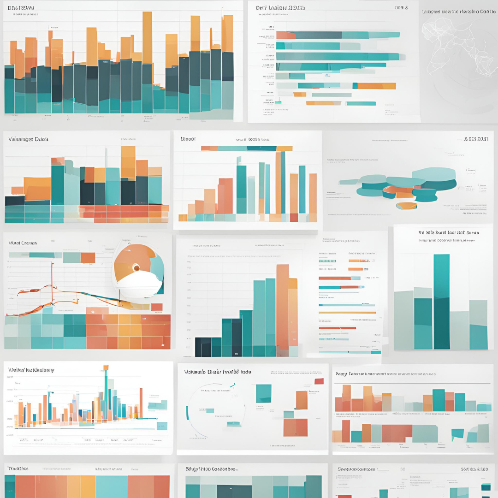
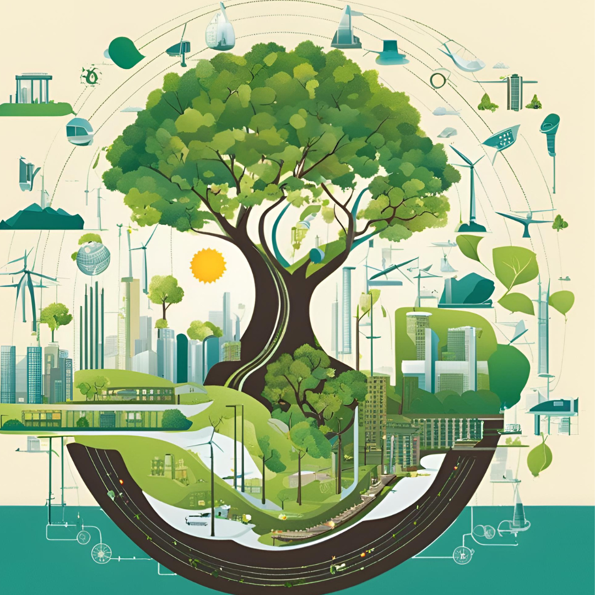

About Me
Hello! My name is Tanvir, and I hail from the beautiful country of Bangladesh. Currently, I am residing in the vibrant city of Amsterdam, Netherlands, where I have been fortunate to experience a melting pot of cultures and ideas.
Educational Background
My academic journey began in Bangladesh, where I pursued my Bachelor's degree in Computer Science and Engineering (CSE). This foundational period was filled with rigorous coursework, engaging projects, and a deep dive into the world of computing. Driven by a passion for software development and an eagerness to expand my knowledge, I went on to complete a Master's degree in Software Engineering from Italy, Finland and the Netherlands. This advanced education equipped me with a robust understanding of software development methodologies, design patterns, and project management.
Professional Experience
Following my academic pursuits, I transitioned into the professional realm, where I gained invaluable hands-on experience in data analysis. This phase of my career allowed me to apply theoretical knowledge to real-world problems, enhancing my skills in data collection, cleaning, processing, and visualization. I have worked on various projects that required me to analyze complex datasets, extract meaningful insights, and present findings in a clear and actionable manner.
Current Endeavors
Living in Amsterdam has provided me with an exciting opportunity to immerse myself in a dynamic tech ecosystem. The city is a hub for innovation and offers a plethora of opportunities for continuous learning and professional growth. Here, I am actively involved in the tech community, attending meetups, workshops, and conferences to stay abreast of the latest trends and advancements in the field.
Skills and Interests



Favourite Quote
Education is not the piling on of learning, information, data, facts, skills, or abilities-that’s training or instruction-but is rather making visible what is hidden as a seed.